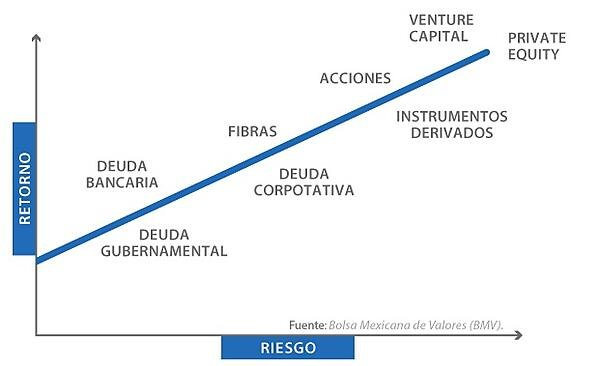

Se publica "Inversiones en México" para dar a conocer estrategias financieras.
Navegación
Riesgos de inversión
Hay una serie de riesgos de inversión a los que te puedes enfrentar al rentabilizar tu dinero; dichos riesgos pueden afectar el desarrollo de tu proyecto de inversión; sin embargo, existen formas de reducirlos y obtener buenos resultados. Te presentamos algunos de los principales riesgos a los que te puedes afrontar:
Estos son algunos de los riesgos más importantes a los que te puedes enfrentar como inversor.
Pero no son los únicos, ya que existe otra serie de riesgos operativos, por caídas de precios de los activos, derivados de una catástrofe natural, entre otros, que pueden influir en los resultados.
Invertir en cualquier activo de inversión pone tu capital en riesgo.

Fig.1 - Retorno vs Riesgo, Bolsa Mexicana de Valores.